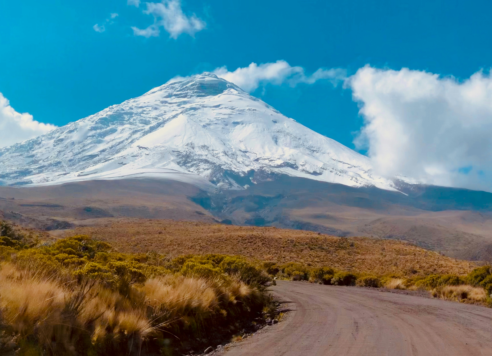
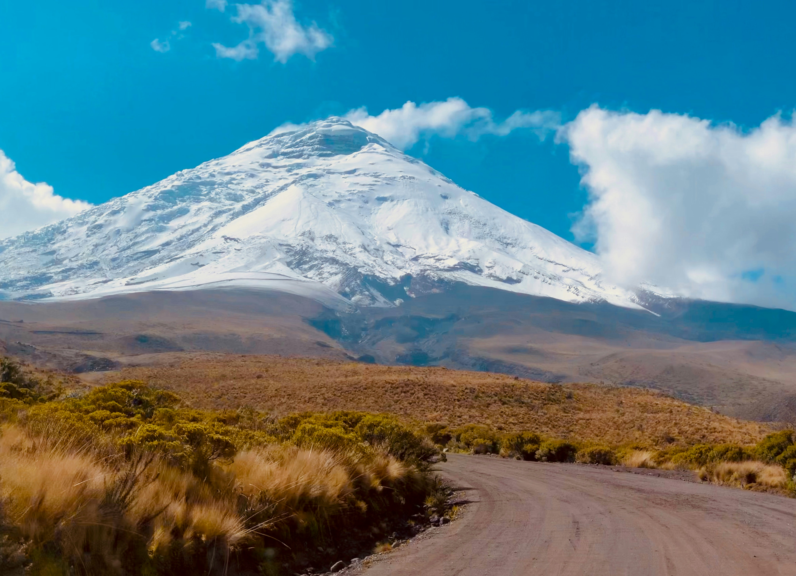

The Coast
According to the Ecuadorian Ministry of Tourism "Five of the country’s provinces (Esmeraldas, Manabí, Guayas, Los Ríos, and El Oro) are located on the Ecuadorian coast. The region’s climate varies from hot and dry in the north to hot and humid in the south. Several national parks such as Machalilla and Manglares-Churute provide endless opportunities for eco-adventurers. Simón Bolívar International Airport, located in Guayaquil, Ecuador's principal port, makes getting to Ecuador's beaches easy, quick, and affordable. Moreover, with a well-developed tourist infrastructure, all of Ecuador's beautiful beaches offer relaxation and entertainment in a tropical paradise".
Activities
- Swimming
- Surfing
- Kayakig
- Beachcombing
The Andes
According to the Ecuadorian Ministry of Tourism "The Ecuadorian Andes are known worldwide for their impressive mountains, volcanoes, and snow-capped peaks, some of the most famous of which are Cotopaxi and Chimborazo. The ten Andean provinces are also home to cities and towns of historical interest and importance such as Quito and Cuenca and artisan centers such as Otavalo. The area is also home to several national parks with an abundant variety of flora and fauna. Because of the diverse geography of the area, the Andes consists of a variety of landscapes, each one with a unique microclimate. Moreover, the area is a place visited by almost all visitors who come to Ecuador as Quito’s Mariscal Sucre International Airport is the nation’s most frequented entry point".
Activities
- Trekking
- Biking
- Hiking
- Horseback riding
 
